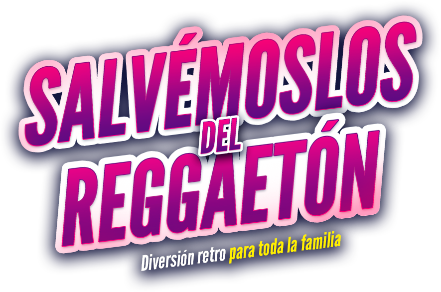

Rock, pop y clásicos
El evento gira alrededor de canciones icónicas, arreglos en banda y una puesta en escena pensada para conectar con varias generaciones.

Segunda edición · 2026
Una experiencia musical en vivo donde estudiantes, docentes y familias se encuentran alrededor del rock, el pop, los clásicos de los 80’s y el legado de Michael Jackson.
¿De qué trata?
“Salvémoslos del Reggaetón” es un espacio artístico donde los procesos de formación musical se transforman en una experiencia de escenario real. La idea no es pelear con ningún género, tranquilos, no vamos a iniciar una guerra cultural con panderetas, sino abrir la puerta a otros sonidos, referentes e historias musicales.
El evento gira alrededor de canciones icónicas, arreglos en banda y una puesta en escena pensada para conectar con varias generaciones.
Esta será la segunda edición realizada junto a Full 80’s, fortaleciendo una alianza que conecta experiencia, escenario y formación artística.
Para estudiantes y docentes, el evento funciona como una meta artística clara: preparar repertorio, trabajar ensamble, presencia escénica y responsabilidad grupal.
Especial 2026
Este año el evento tendrá un componente especial dedicado al legado de Michael Jackson: su impacto en la música pop, la puesta en escena, el baile, la producción visual y la forma de entender un show como una experiencia completa.
No se trata solo de tocar canciones famosas. Se trata de estudiar referentes, entender su lenguaje escénico y convertirlo en aprendizaje musical real.
Canciones previstas
Esta sección puede ajustarse a medida que avancen los ensayos. Porque sí, los repertorios cambian, los tonos cambian, y a veces el guitarrista descubre que no era tan fácil como sonaba en YouTube.
Participantes
El evento contará con dos bandas principales y formatos mixtos entre adolescentes y adultos, permitiendo que los procesos se conecten y que el escenario sea una experiencia compartida.
Estudiantes jóvenes que trabajarán repertorio moderno, clásico y de alto impacto escénico, fortaleciendo seguridad, escucha y trabajo en equipo.
Participantes adultos con un enfoque de disfrute, proceso musical, reto personal y experiencia de concierto.
Momentos donde adolescentes y adultos podrán compartir escenario, repertorio o ensamble, generando una experiencia intergeneracional.
Guía rápida